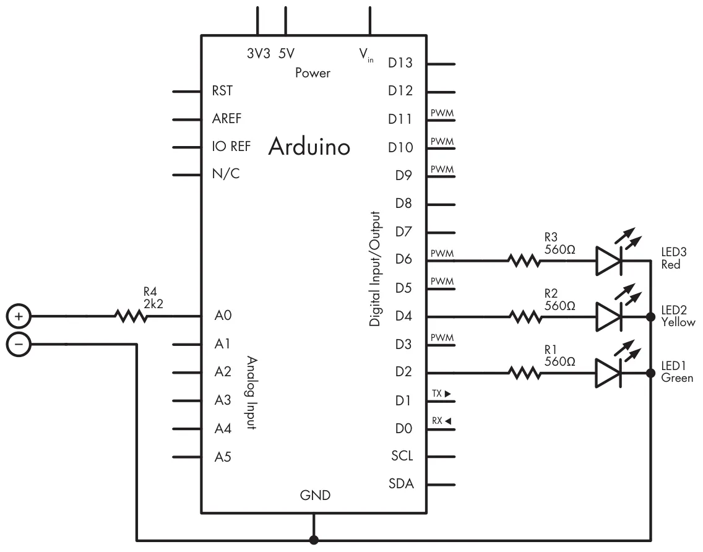

Although the popularity and use of cell batteries has declined, most people still have a few devices around the house that use AA, AAA, C, or D cell batteries, such as remote controls, clocks, or children’s toys. These batteries carry much less than 5 V, so we can measure a cell’s voltage with our Arduino to determine the state of the cell. In this project we’ll create a battery tester.
The Goal
Single-cell batteries such as AAs usually begin at about 1.6 V when new and then decrease with use. We will measure the voltage and express the battery condition visually with LEDs. We’ll use the reading from analogRead() and then convert the reading to volts. The maximum voltage that can be read is 5 V, so we divide 5 by 1,024 (the number of possible values), which equals 0.0048. Therefore, if analogRead() returns 512, then we multiply that reading by 0.0048, which equals 2.4576 V.
The Algorithm
Here’s the algorithm for our battery tester operation:
- Read from analog pin zero.
- Multiply the reading by 0.0048 to create a voltage value.
- If the voltage is greater than or equal to 1.6 V, then briefly turn on a green LED.
- If the voltage is greater than 1.4 V and less than 1.6 V, then briefly turn on a yellow LED.
- If the voltage is less than 1.4 V, then briefly turn on a red LED.
- Repeat indefinitely.
The Hardware
Here’s what you’ll need to create this project:
- Three 560 Ω resistors (R1 to R3)
- One 2.2 kΩ resistor (R4)
- One green LED (LED1)
- One yellow LED (LED2)
- One red LED (LED3)
- One breadboard
- Various connecting wires
- One Arduino and USB cable
The Schematic
The schematic for the single-cell battery tester circuit is shown in Figure 4-31. On the left side, notice the two terminals, labeled + and –. Connect the matching sides of the single-cell battery to be tested at those points. Positive should connect to positive, and negative should connect to negative.

The Sketch
Now for the sketch:
// Project 6 - Creating a Single-Cell Battery Tester
#define newLED 2 // green LED 'new'
#define okLED 4 // yellow LED 'ok'
#define oldLED 6 // red LED 'old'
int analogValue = 0;
❶ float voltage = 0;
int ledDelay = 2000;
void setup()
{
pinMode(newLED, OUTPUT);
pinMode(okLED, OUTPUT);
pinMode(oldLED, OUTPUT);
}
void loop()
{
❷ analogValue = analogRead(0);
❸ voltage = 0.0048*analogValue;
❹ if ( voltage >= 1.6 )
{
digitalWrite(newLED, HIGH);
delay(ledDelay);
digitalWrite(newLED, LOW);
}
❺ else if ( voltage < 1.6 && voltage > 1.4 )
{
digitalWrite(okLED, HIGH);
delay(ledDelay);
digitalWrite(okLED, LOW);
}
❻ else if ( voltage <= 1.4 )
{
digitalWrite(oldLED, HIGH);
delay(ledDelay);
digitalWrite(oldLED, LOW);
}
}In the sketch for Project 6, the Arduino takes the value measured by analog pin 0 at ❷ and converts this to a voltage at ❸. You’ll learn about a new type of variable, float at ❶, in the next section. You’ll also see some familiar code, such as the if-else functions, and some new topics, such as doing arithmetic and using comparison operators to compare numbers, which are all discussed in the sections that follow.